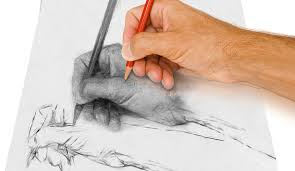

El término dibujo significa tanto el arte que enseña a dibujar1, como la delineación, figura o imagen ejecutada en oscuro y claro; toma nombre de acuerdo al material con el que se hace.2 Es una forma de expresión gráfica que plasma imágenes sobre un espacio plano, considerado parte de la pintura y una de las modalidades de las artes visuales. Se considera al dibujo como el lenguaje gráfico universal y ha sido utilizado por la humanidad para transmitir ideas, proyectos y en un sentido más amplio, sus ideas, costumbres y cultura.

Estilo de dibujo a Lápiz
Historia del dibujo
El dibujo sirve como una herramienta para la representación de objetos reales o ideas que, a veces, no es posible expresar fielmente con palabras (o único medio de expresión ante la carencia de escritura). Los primeros dibujos conocidos se remontan a la prehistoria, teniendo 73 000 años la primera muestra.3 Entre las pinturas rupestres destaca la cueva de Altamira, donde el ser humano plasmó en los techos y paredes de las cavernas lo que consideraba importante transmitir o expresar, normalmente actividades relacionadas con su forma de vida y su entorno.
Dibujos y pinturas de la cueva de Altamira, en España.
De las primeras civilizaciones perduran escasos ejemplares de dibujos, normalmente, por la fragilidad del material en el que fueron ejecutados (se han hallado en ostraca y pinturas murales inacabadas), o porque eran un medio para elaborar pinturas posteriormente, recubiertos con capas de color. Las culturas de la Antigua China, Mesopotamia, el valle del Indo o el Antiguo Egipto dejaron muestras claras de ello, ideando los primeros cánones de proporciones, como sucedió también en la Antigua Grecia y Roma.
En la Edad Media, se utilizó profusamente el dibujo, generalmente coloreado, para representar sobre pergaminos temas religiosos a modo de explicación o alegoría de las historias escritas, privando así lo simbólico sobre lo realista, incluso las proporciones y cánones de la época. La cultura islámica también contribuyó con preciosos dibujos que solían acompañar textos de anatomía, .astronomía. o astrología. En el Renacimiento, el dibujo eclosiona y logra alcanzar sublimes logros. Por primera vez se estudia el método de reflejar la realidad con la mayor fidelidad posible, con arreglo a normas matemáticas y geométricas impecables: con Filippo Brunelleschi surge la perspectiva cónica. El dibujo, de la mano de los grandes artistas renacentistas cobra autonomía, adquiriendo valor propio en autorretratos, planos arquitectónicos y variados temas realistas –como los de Leonardo da Vinci–, además servir como estudio previo imprescindible de otras artes, como la pintura, escultura o arquitectura.
Dibujos de Piedra Indios Antiguos
Concepto
El dibujo es el lenguaje universal, ya que sin mediar palabras es posible transmitir ideas de modo gráfico que resulten comprensibles para todos. Hay dibujos que son reconocidos dentro de una cultura, denominados símbolos. Otros ejemplos son los pertenecientes a la señalética, actividad que se encarga de comunicar parámetros de comportamiento en determinada locación por medio del lenguaje gráfico.
Paul Valéry decía que las tres grandes creaciones humanas son el dibujo, la poesía y las matemáticas.
Dibujar y pintar
Dibujar y pintar no significa lo mismo. Por su naturaleza física, el dibujo es un subconjunto de las manifestaciones artísticas conocidas como pintura, pero no forma parte de la pintura como técnica de representación. El dibujo es el arte de representar gráficamente objetos sobre una superficie plana; es base de toda creación plástica y es un medio convencional para expresar la forma de un objeto mediante líneas o trazos. En la pintura, la estructura de los planos se logra mediante masas coloreadas.
Las técnicas de pintar y dibujar pueden confundirse, porque las herramientas son en ocasiones las mismas. Sin embargo la técnica es distinta: pintar involucra la aplicación de pigmentos, generalmente mediante un pincel, que son esparcidos sobre un lienzo, y el dibujo es la delineación en una superficie, generalmente papel. En otras palabras, el acto de pintar utiliza la mancha como recurso comunicativo mientras que el dibujo utiliza la línea.
El término dibujar también sugiere un proceso distinto al de pintura. El dibujo es generalmente exploratorio, con énfasis principal en la observación, solución de problemas y composición. En contraste, la pintura tradicional es generalmente la ejecución o acabado del dibujo mediante la inserción de pigmentos.
Elección de los materiales
Antes de iniciar a dibujar un trazo conviene tener en cuenta el efecto que se desea lograr, porque de ello dependerá la elección de materiales. Por ejemplo, si se compara una serie de lápices ,se observa que la mínima tiene diferentes Propiedades que tienen: las duras o blandas, lisas o desmenuzables. Estas propiedades tendrán más importancia según el papel se utiliza: las minas duras No se deslizan con facilidad sobre papeles rugosos o sanitizados en frío, mientras que las minas blandas si; las minas muy blandas por el contrario, tienden a desecharse si se usa sobre papeles de textura muy pronunciada. con bien experimentar con diferentes superficies de dibujos tales como el papel de acuarela, papel texturizado a máquina o los tableros de gesso, a fin de dar con los materiales y los lápices adecuados para tener una buena elección de ellos. comprar una serie de papeles saturados y dibujar en cada uno una pequeña zona de líneas y tonos, y usando el mismo lápiz para todos. Esto mostrará la influencia de la superficie en la gama de efectos que se pueden conseguir.
Ejemplos de tipos de Lápices Ejemplos de tipos de Papel
Tienda en Línea
Código
Compre sus implementos para que inice en el dibujo a lápiz